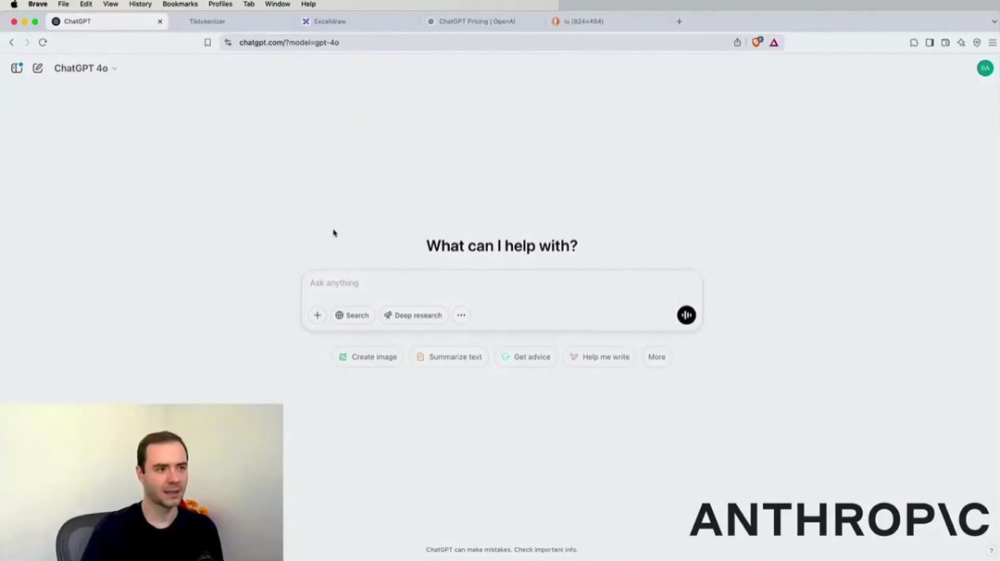
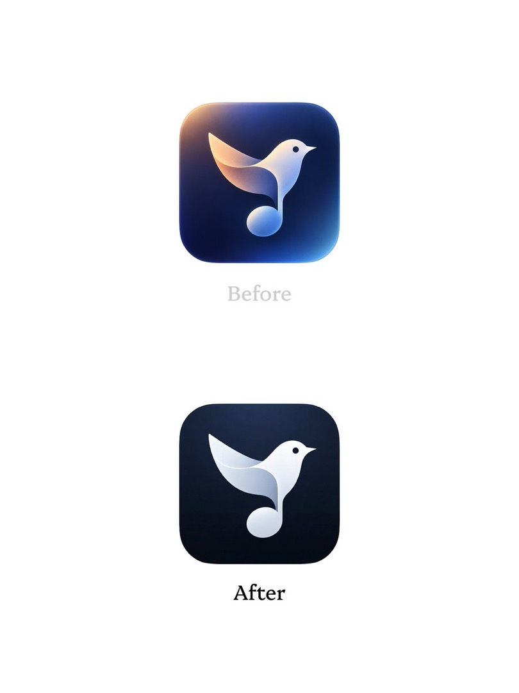
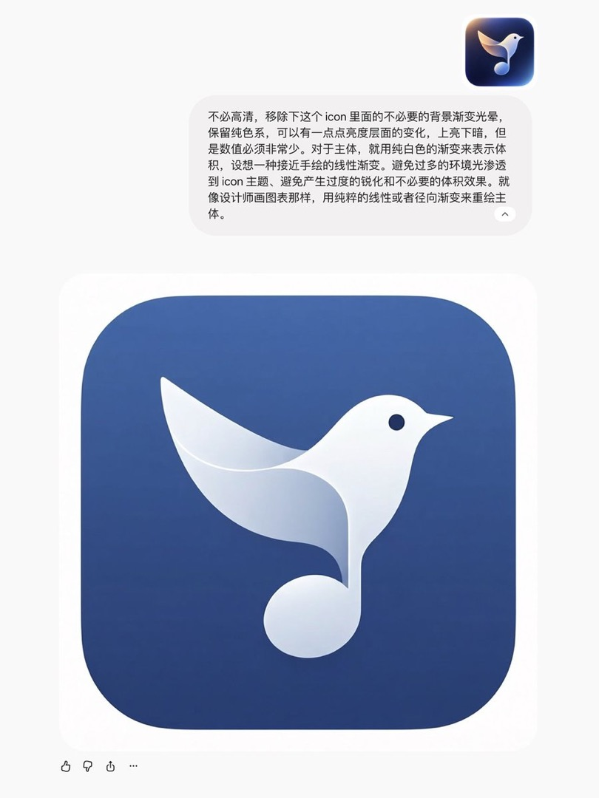

本期速览
01 Holon搭建Agent生态研究日报
02 Baseten推理工程教材免费发布
03 Karpathy提出Agent系统架构方法
04 Pero开源科研Agentic工作区
06 AI图标优化的体积表现提示词
01｜Holon搭建Agent生态研究日报
来源（X） · @jolestar · 2026-10-29 15:49
这个 Agent 持续关注 15 个 1 级别核心项目（全量挂载源码与 Commit 基线，做代码级架构比对）以及 30 多个 2 级别专题项目。跑下来已经累计生成了近 90 期日报和 20 多篇深度调研报告。
平时在手机或推特上看到有意思的 Agent 仓库或技术文章，直接转发分享给它，它就会在后台自动 clone 仓库、挂载 Workspace 并生成代码级调研报告，在移动端尤其便利。
我把这个 Agent 的搭建方式和背后的工作区机制写成了指南
引用内容
Holon @holonrun
详细拆解如何基于 Holon 搭建自主生态研究 Agent——从知识库自动维护、动态挂载多项目 Workspace 交叉比对源码与 commit，到手机端随时分享链接一键发起后台异步调研。
完整实战教程：
👉 https://holon.run/zh-CN/guides/build-agent-ecosystem-researcher
02｜Baseten推理工程教材免费发布
来源（X） · @baseten · 2026-09-22 00:29
中文译文
推理工程目前还没有一本教科书。所以我们写了一本。264页，免费PDF和有声书。
原文
Inference engineering doesn't have a textbook yet. So we wrote one. 264 pages, free PDF and audiobook.
03｜Karpathy提出Agent系统架构方法
来源（X） · @huxlab · 2026-10-29 11:24
说实话，市面上收你 1.5 万刀的 AI 训练营，含金量加起来都没这 120 分钟扎实。
他根本懒得聊什么 prompt 技巧，而是把这些年底层演进的底牌全揭开了：
Prompts → Agents → Loops → Graphs
几个彻底颠覆认知的点：
1. 杠杆彻底变了： 绝大多数人还在抠 prompt 里的形容词，真正拉开差距的是 Harness：你给 agent 准备的环境到底行不行？能不能自动化运行、能不能拿到真实的反馈？
2. Loop不是简单重复： “产出 → 跑测试 → 报错吃进上下文 → 纠错 → 重试”，直到客观指标变绿。没有验证的重复叫死循环；有客观反馈的才叫自主修正。
3. 单兵靠 Agent，规模化靠 Graph： 单个 agent 顶多帮你修个简单函数，但想让代码过夜跑出几十个 PR，必须上 Graph：谁负责规划、谁负责写、谁交叉复核、状态怎么传递、哪一步需要人把关。
4. 模型是消耗品，系统才是护城河： 底层模型三个月洗一次牌，天天追着调 prompt 迟早被淘汰；但这套控制流和反馈拓扑架构，换什么模型都能跑。
看完最大的体感是：
我们之前用 AI 的方式实在太原始了，整天像哄小孩一样在聊天框里教它说话。
真正的顶级玩家，早就把精力全移到“搭Loop、画Graph、建环境”上了。

04｜Pero开源科研Agentic工作区
来源（X） · @phodal · 2026-10-29 16:28
今天就来介绍一下新坑：Pero 🚀
一个面向 AI for Science（AI4S）的开源 Agentic Workspace。先从一个简单的场景学习起来，探索 AI Agent 如何参与科研工作流。
另外，还想尝试一种新的开源协作方式：不只是贡献代码，还可以贡献 Agent、Tokens 和算力。
比如，让你的 Agent 自动认领 GitHub Issue，在自己的机器上执行任务，再把结果贡献回来。
也算是给大家提供一种新的方式，来花掉用不完的 Tokens。😂
刚开坑，欢迎一起来折腾！
GitHub：https://github.com/phodal/pero
任务广场：https://app.openpero.com/tasks
05｜Grok Bot多角色内容工作流
来源（X） · @F5Adon · 2026-10-29 16:49
这篇 Grok Bot 教程的起步很具体：给它你的领域、语气和几条代表作；再拆三个角色，Scout 找素材，Analyst 查证并附来源，Writer 按样本起草。设一个固定例程，每天交带链接的简报和候选文案。
最该照搬的规则是：队友不发帖、不关注、不私信。人打开来源、选自己认可的内容，再点发布。搜集和起稿可以交出去，最后那一下判断仍然要自己做。
引用内容
Leo @Leo100x
中文译文
原文
06｜AI图标优化的体积表现提示词
来源（X） · @Kubai087 · 2026-10-29 13:16
核心法则——降低非必要的体积表现
AI 容易把简单符号或者卡通化的设计置入严谨的空间和物理结构中理解，因此，可以用以下几个原则来改造你的图标:
1. For 主体：非必要不使用过多高光、阴影笔触，尽量使用简单的线性或者径向渐变来构建主体；
2. For 主体：非必要尽量让环境光影响主体；
3. For 背景：考虑不同圆角下的裁切适配，避免添加多余的弥散光和材质；用纯粹的线性渐变，渐变色值取同色相不同亮度，或者不同色相但鲜亮的颜色；
4. For 全局：尽量不要使用内发光、内阴影来体现质感，除非我要求
5. For 全局：高光不要只加亮，那样会变灰；阴影用相近色相更深一点的颜色，不要直接掺黑。
最后，让 AI 导出分层 PNG，以及背景参数，导入 Icon Composer 一键适配液态玻璃。
感谢 @H_Stepania_ 的案例

